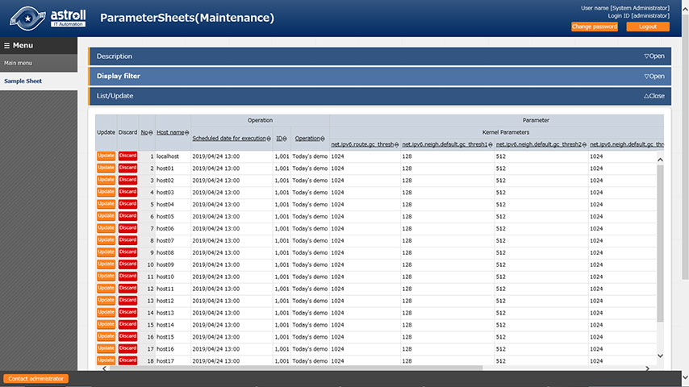
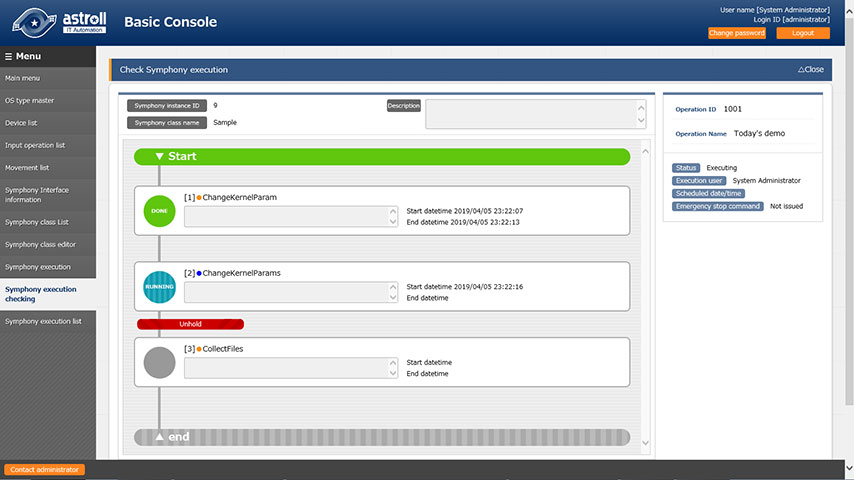
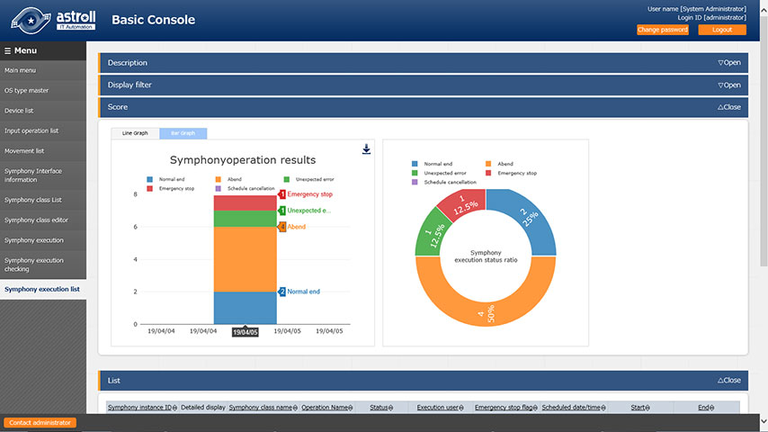

Three problems tend to occur during system construction.
-
- Data management
errors - Centralized management prevents confusion.
- 
- Data management
-
- Manual processing
mistakes - Automated tasks simplify operation.
- 
- Manual processing
-
- Delays in responding
to problems - Detailed records identify issues.
- 
- Delays in responding
Main features of astroll IT Automation
-
- astroll provides multiple user interfaces.
- You can centrally manage IaCs and parameters from multiple user interfaces (Web, Excel, RestAPI).
-
- astroll helps to improve the reusability of the IaC.
- astroll helps to modularize your IaCs for reusability and uses them together during execution.
-
- astroll prevents typos, such as variable names.
- astroll automatically parses IaCs to find out the variable names. You can select and use variable names without typos.
-
- astroll manages the generation of system parameters.
- astroll manages the generation of system parameters to be set in variables. You can also search for system parameters designed in the past.
-
- astroll controls multiple northbound automation softwares.
- astroll controls multiple automation softwares such as ANSIBLE and automatically generates the input data required for them to operate.
-
- astroll helps you monitor the execution of automation software in real time
- astroll helps you monitor the execution status of IaCs in real time. It also collects execution logs and reports successful and failed executions.
Do you want to know more about astroll IT Automation?

Various documents are available, click the button for more information.